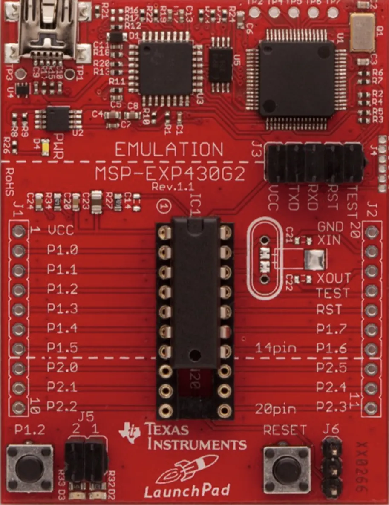

A series of progressively complex embedded C programs on the TI MSP430 LaunchPad — from register-level GPIO and timer configuration through interrupt-driven architectures, UART serial communication, and PWM signal generation at 75% duty cycle.

This project represents a series of embedded systems programs developed on the Texas Instruments MSP-EXP430G2 LaunchPad, each building on the previous to demonstrate increasingly sophisticated control of the microcontroller's hardware peripherals — all at the register level in C, with no abstraction libraries.
The timer work began with basic port toggle code to examine output pin frequency on an oscilloscope, then progressed through increasingly precise timing control:
UART was implemented by configuring the secondary pin functions on pins 1 and 2 for RXD and TXD. The programs progressed from simple character transmission to a full bidirectional system:
The interrupt work demonstrated event-driven architectures and low-power operation:
Every program in this series works at the register level — directly setting configuration bits, managing interrupt vectors, and configuring clock sources without abstraction layers. This is the foundation for real-time embedded systems work where you need deterministic timing, minimal overhead, and complete control of the hardware.